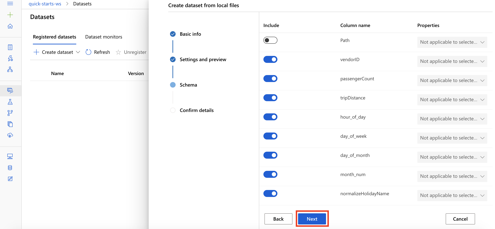
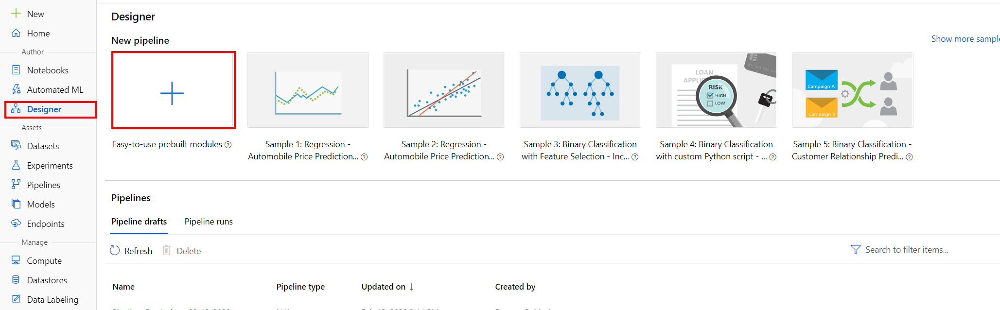

My First Neural Network Model on AzureML
It was in early Summer'20 when I was awarded the Scholarship to Microsoft Machine Learning foundation program powered by Udacity. I was given an opportunity to work with Microsoft Azure and use its resources to build Machine Learning models. In this post I will show you how you can build your own Neural Network model on Azure!
A brief Intoduction to Neural networks: An Artificial Neural Network or ANN is a computational model that is inspired by the way biological neural networks in the human brain process information. Basically, We're trying to immitate the biological Neural Network of the human body using a Computer program! And using Neural Network we can train models to do things like:
- Image Classification
- Speech Recognition
- Forecasting
- Autonomous Vehicles and much more!
Let's see how we can build one using AzureML! Although neural networks are widely known for use in deep learning and modeling complex problems such as image recognition, they are easily adapted to regression problems. We will build a Neural Network for a Regression problem here.
First after logging in to your Azure portal, you will have to open the available machine learning workspace. Select Launch now under the Try the new Azure Machine Learning studio message.
-
From the studio, select Datasets, + Create dataset, From web files. This will open the Create dataset from web files dialog on the right. You could also use your local dataset by selecting "From local files" but I've used the online Dataset here.
-
I've used a public URL for the training data file which consists of NYC-TAXI-DATA:
-
Our next task is to Preview the Dataset, set the column headers drop down to All files have same headers. Scroll the data preview to right to observe the target column: totalAmount. After you are done reviewing the data, select Next We want to make sure the data has proper coloumn names and we can find our target variable.
-
In the next option you can select/remove coloumns from the dataset: 
-
Now we can confirm the final Dataset, Just simply click on Create: We are now done with creating our dataset! Now we can go ahead and design our pipeline for the model.
-
To create a New training Pipeline, go to studio, select Designer, +. This will open a visual pipeline authoring editor. 
-
As soon as you click on create new pipeline, a canvas will open up and you will have to setup a compute target. This is nothing but you are deciding from which compute you want to run this model. Select the available compute:
-
After you've setup your compute, you can go ahead and design your pipeline! First, we will select Datasets section in the left navigation. Next, select My Datasets, nyc-taxi-sample-data and drag and drop the selected dataset on to the canvas.
-
Now that I have my dataset on the canvas, I want to transform it to use it for the model.
- Select Data Transformation section in the left navigation. Follow the steps outlined below:
- Select the Split Data prebuilt module
- Drag and drop the selected module on to the canvas
- Fraction of rows in the first output dataset: 0.7 (we want to split the data 70:30 for train:test)
- Connect the Dataset to the Split Data module
-
After transorming the data we want to choose the model we want to implement:
- We will initialize regression model
- Select Machine Learning Algorithms section in the left navigation. Follow the steps outlined below:
- Select the Neural Network Regression prebuilt module, in the Regression category.
- Drag and drop the selected module on to the canvas
- Create trainer mode: Single Parameter. This option indicates how you want the model to be trained.
- Hidden layer specification: Fully connected case.
- For Learning rate: 0.01.
Because the number of nodes in the input layer is determined by the number of features in the training data, in a regression model there can be only one node in the output layer.
-
Like traditional ML models we want to train our model. Select Model Training section in the left navigation. Follow the steps outlined below:
- Select the Train Model prebuilt module
- Drag and drop the selected module on to the canvas
- Connect the Neural Network Regression module to the first input of the Train Model module
- Connect the first output of the Split Data module to the second input of the Train Model module
- Select the Edit column link to open the Label column editor
- The Label column editor allows you to specify your Label or Target column. Type in the label column name totalAmount and then select Save.
-
Now we've setup our training model and would like to setup the Scoring model:
- Select Model Scoring & Evaluation section in the left navigation. Follow the steps outlined below:
- Select the Score Model prebuilt module
- Drag and drop the selected module on to the canvas
- Connect the Train Model module to the first input of the Score Model module
- Connect the second output of the Split Data module to the second input of the Score Model module
Note that Split Data module will feed data for both model training and model scoring. The first output (0.7 fraction) will connect with the Train Model module and the second output (0.3 fraction) will connect with the Score Model module.
-
In AzureML, Scoring and Evaluating models mean two different things, We will see from the outputs how they both are different. Let's go ahead and add the Evaluate model module to the canvas.
- Connect the Score Model module to the first input of the Evaluate Model module
-
YAY! We're done with designing our Neural Net pipeline!
Now, let's go ahead and submit this Pipeline:
- Select Submit to open the Setup pipeline run editor. Select all the default options and submit the run.
- Now we will have to wait till the completion of the run.
- Once the run has been completed, Let's take a look at the results. We will start of by visualizing the output of the scoring model:
- Results: We can see the Scored label and the actual values next to it. Looks like our models prediction was quite good! Now let's evaluate our model.
- Visualize the Evaluation Results Result: We can see value of the Evaluation metrics such as MAE, RMSE etc.
- Congratulations! We have successfully trained a simple neural net model using the prebuilt Neural Network Regression module in the AML visual designer!